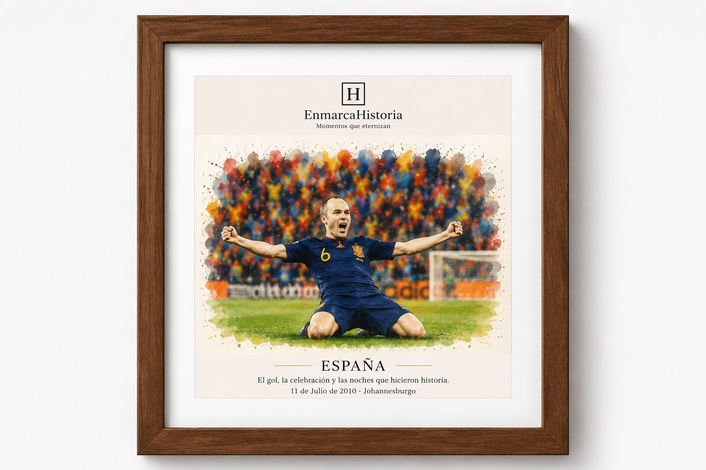

Finales y títulos
Partidos que cambiaron una temporada y quedaron en la memoria.
Ilustraciones artísticas inspiradas en los momentos más inolvidables del deporte.
Colecciones inspiradas en grandes momentos de clubes y selecciones. Cada diseño está pensado para decorar, regalar y recordar.

El gol, la celebración y las noches que hicieron historia.
Partidos que cambiaron una temporada y quedaron en la memoria.
Elige un jugador, un partido, una fecha o una fotografía especial. Preparamos una propuesta personalizada y podrás escoger el tamaño y el color del marco.
Solicitar diseño